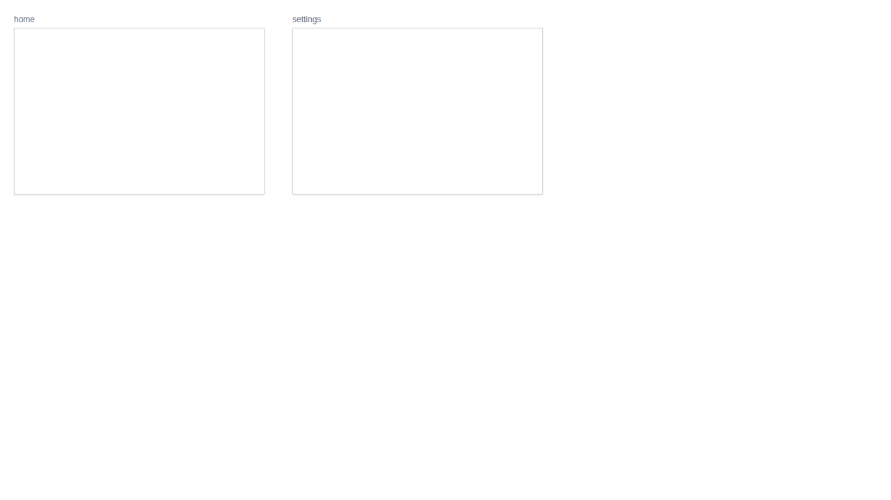
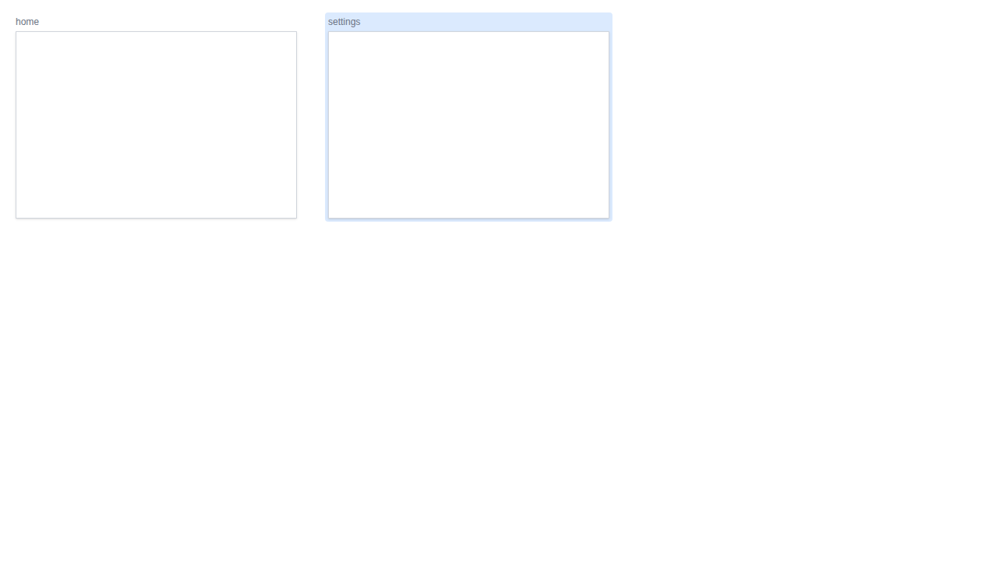
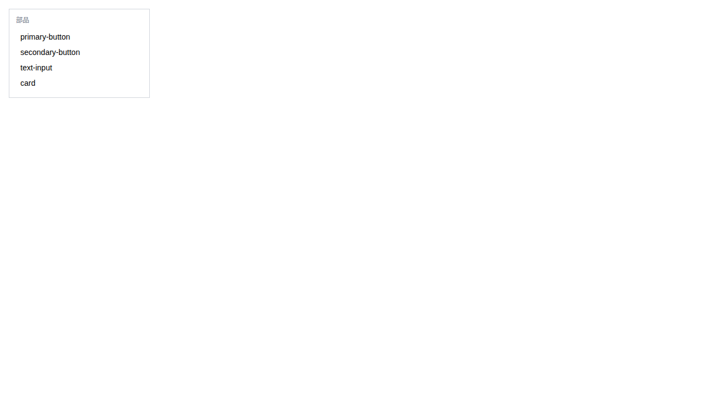
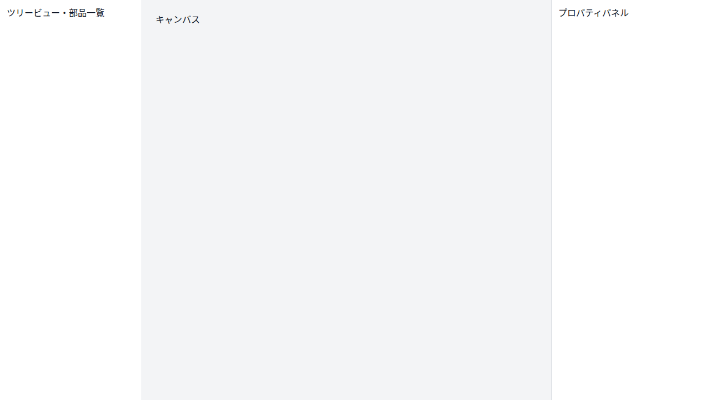
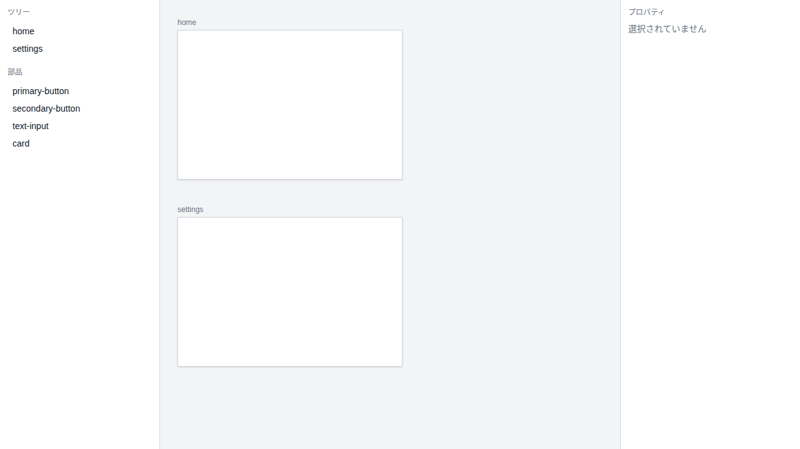

- Diff pixels
- 0
- Diff ratio
- 0.0000%
Overlay is unavailable because this story only has one snapshot.
BaselineNot available

OverlayNot available
DiffNot available
Slider is unavailable for this story.
Switch between Overlay, Split + Diff, and Slider to inspect changes. Click a story title to open its detail page.




